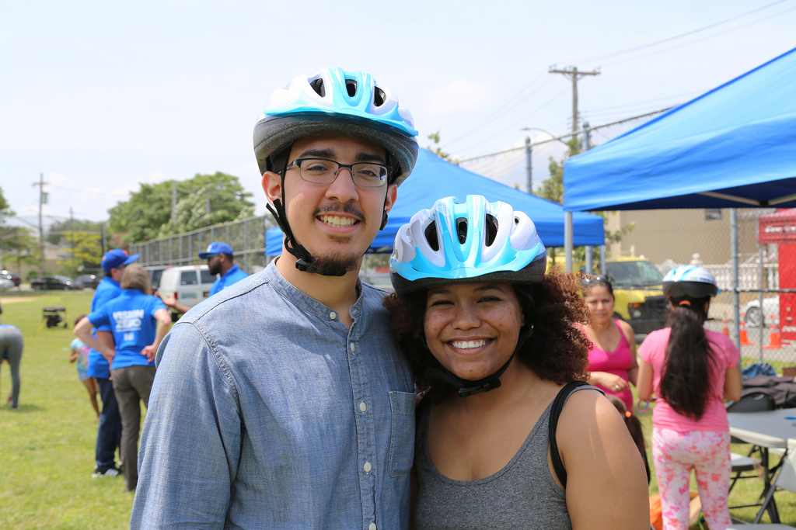
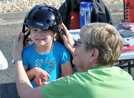
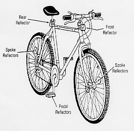
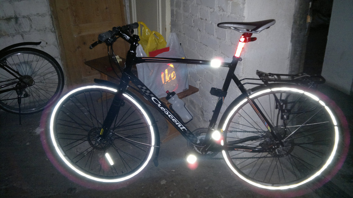
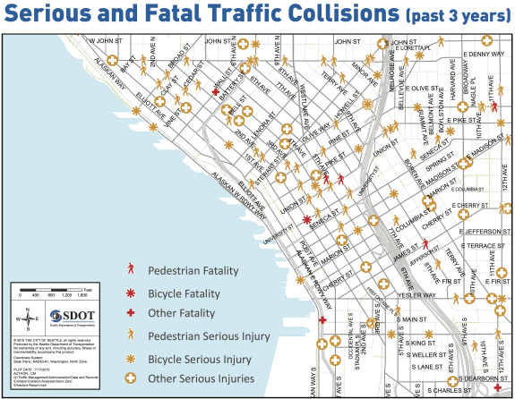

Helmets
Wearing a helmet is the law! In the event of an accident you will be much more likely to avoid serious head and brain injury while wearing a helmet. Also, wearing a helmet sets a great example for your children while keeping your head warm, dry and visible.


Reflectors
Being seen can save your life! It is also required by law to have reflectors on your bicycle. Reducing your risk to being found at fault during an accident is another great reason to wear your safety equipment.


Accidents/Deaths
Unfortunately, Seattle is seeing a rise in accidents and deaths for bicycle riders who share the road with cars and trucks. As the roads become more used by cyclists there is a rise in life threatening events for local cyclists. Be careful and always follow the rules of the roads.

Popularity
As Seattle moves toward a lower carbon footprint there has been a rise in bicycle usage. This is a great way to build friendships in the community, promote a healthy lifestyle, and save money.